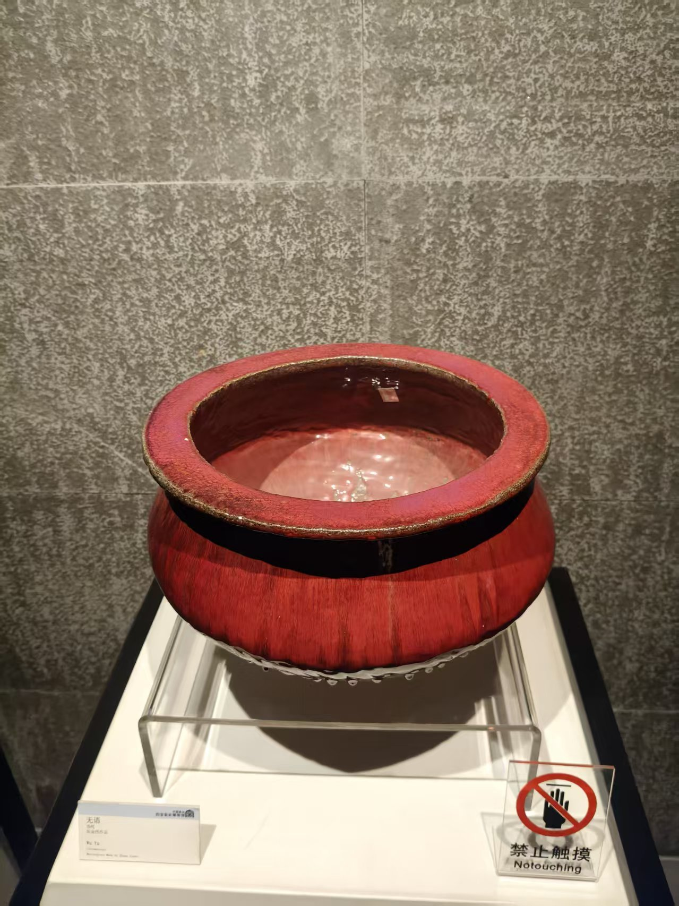
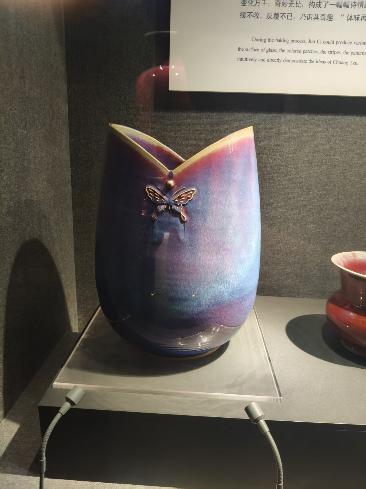
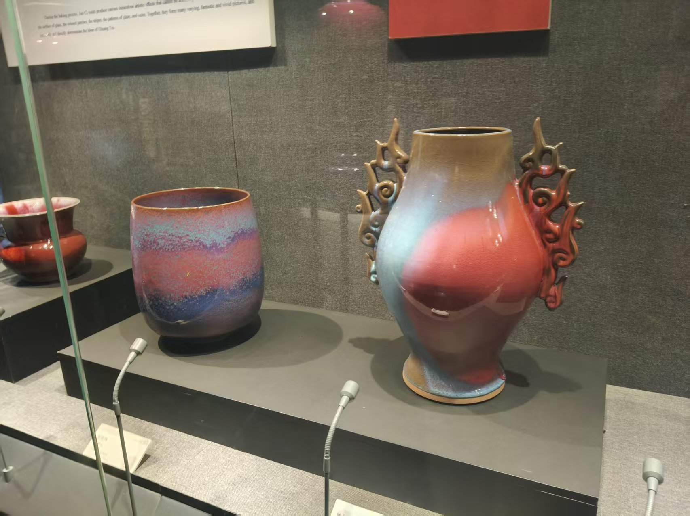
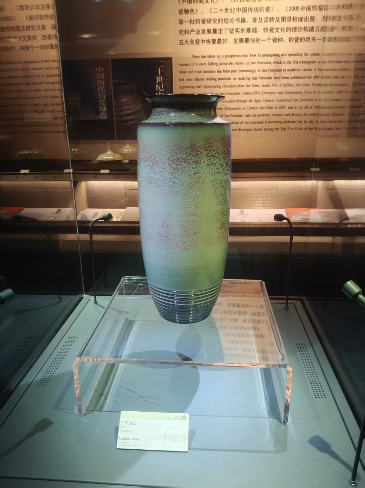
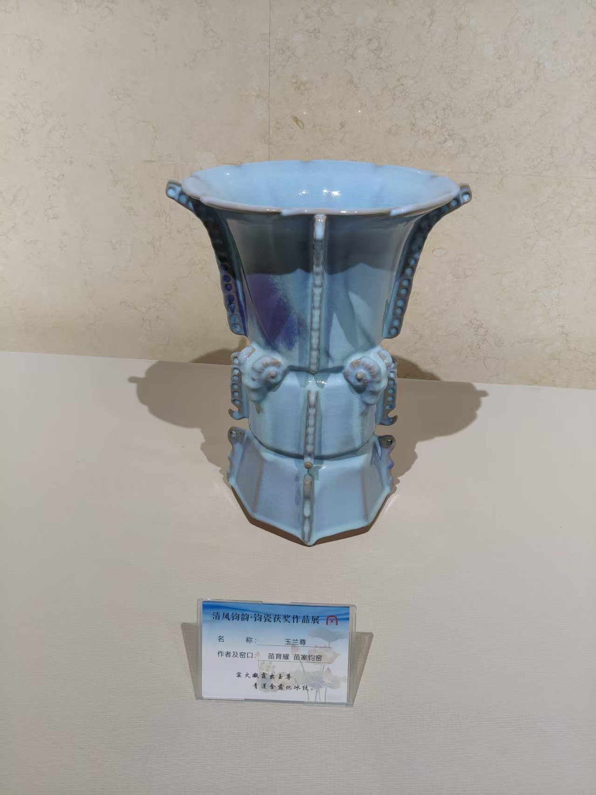

实拍原型
馆藏作品《无语》
钧瓷数字采集 · 2026
窑变新生
从博物馆实拍到可交互数字器物
实拍参考轨道从器型到釉色
THREE COLLECTIONS / 三处实拍
同一炉火，三种观看方式
从古代钧窑器的含蓄天青，到当代钧瓷的雕塑形态，再到窑口展馆中的完整陈列，三组现场影像共同补足器型、釉色与空间语境。
DIGITAL ARCHIVE / 原有实拍档案
一组照片，重构一座釉色档案
数字模型并非文物级扫描，而是以现场照片为依据，对器型、色调与釉面流动进行艺术化复原。新增三处实拍，让模型的颜色和轮廓有了更完整的参照系。
无语主模型器型与红黑釉色依据

俯视采集口沿、内壁与器腹比例

蝶影蓝紫渐变与当代造型

釉色交融铜红、天蓝与深紫色谱

广口太白青绿釉面与颗粒肌理

玉兰尊天青釉与分段器型
01现场采集保留展陈环境、器物轮廓、釉色和标签信息。
02器型重构依据正面与俯视照片建立轴对称低面数模型。
03釉色提取从实拍中提取红、紫、蓝、青色谱并生成动态纹理。
04在线展演以 Three.js 呈现旋转、缩放、开片与窑变交互。